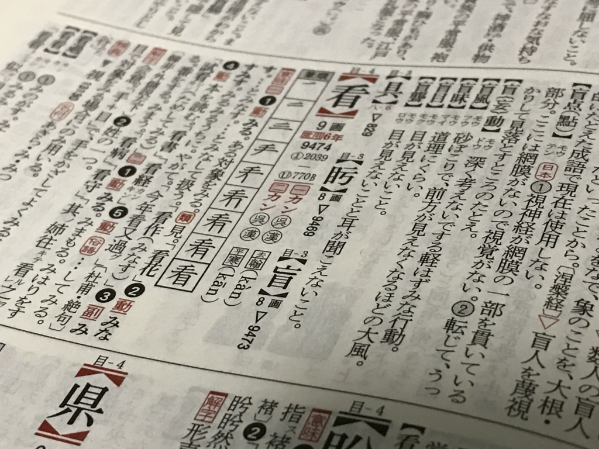
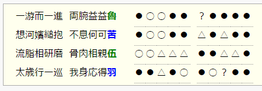
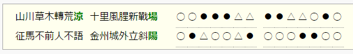

平成自由詩っていうのが流行ってるらしいので詠んでみた
執筆日時：
変な人が恥ずかしい漢詩（平成自由詩と称するらしい）を贈ったのを、筑波大学が飾っちゃったというのが話題になっていた。
白面書生学筑波 白面の書生、筑波に学ぶ
発憤忘食紙筆耕 憤を発し 食を忘れ 紙筆を耕す
桃李満門邦家豊 桃李門に満ち 邦家は豊か
紫峰名声四海奔 紫峰名声 四海に奔る
よくわかんないけど、すげー勉強してがんばったら、自分ちも国も豊かになって、名声も高まった（高まるぜ）みたいな感じなんだろうか。韻を踏んでないとか、平仄があってないとか、すごい叩かれてたけど……そういえば、自分も漢文習ったのに（中学・高校時代だけだけど）、全然詠めないわけで。ほとんどの人はそうだろうと思うのに、自分ができもしないことで他人を貶すのはよくないんじゃないかなぁ。
というわけで、まずは自分でも試しに“平成自由詩”を詠んでみよう……と思ったが、なにも詠むべきことがない！ まぁ、引きこもりだしね。仕方ないね。
そのあと“平成自由詩”のことは忘れていたのだけど、つい最近、ジム通いを始めて、プールで泳ぐようになった。毎回 1km ほど、30分ぐらいで泳いでいるのだけど、その間は腕をグルグル、足をバタバタさせる以外にやることがない。ヒマなのでいろんなことを考えるうちに、ふとあの“平成自由詩”を思いついたのでした。
今週初の水泳セッションです。35分間続けることができました！https://t.co/2FVEwPU2H8 @Withings
— だるやなぎドロップアウト (@daruyanagi) 2017年2月13日
泳ぎながら平成自由律漢詩を考えてたんだが、むずいね
一掻一進躬滋重
想河嬪抱何可苦
流脂相磨筋骨充 pic.twitter.com/IK3ave2dus
水の中だから別に漢字までは厳密に考えてなかったから、Twitter に投稿するときにやっつけで当てた。
一掻一進躬滋重 水を掻いてもちょっとしか進まん、体めっちゃ疲れる
想河嬪抱何可苦 でも水の妖精的なのがぶら下がってると思えば、割とマシ
流脂相磨筋骨充 水の中を泳いでいると、脂肪がとれていく感じ
太歳一巡羽毛均 あと十二年ぐらいしたら、体重がゼロになる予定
謎の七言絶句ができた。「重（じゅう）」と「充（じゅう）」で韻を踏んでるぜー、いぇーい、おっさんよりよくできた詩なんじゃねえの？ 割と面白くて、おっさんがハマって作りまくってるのもわかる気がする（とはいえ、碑文にして贈るのは割と迷惑だと思った）。
でも、家に帰ってちょっと調べると、この漢詩もどきはだいぶダメダメだというのがわかった。
まず、韻を踏むべきはそこじゃない。偶数の句の末で踏むんだな。
あと、「重」と「充」は日本語読みだと響きがたまたまあってるだけで、中国語の発音だとダメダメ。
- 重：平声、冬。上声、腫。去声、宋
- 充：平声、東。
「重」は「冬」と同じ、「充」は「東」と同じ韻らしく、似てるようで全然違う。

こういうのは漢字辞典でちまちま調べないといけないみたいで、だいぶ面倒くさい（写真は『漢字源』だけど、「看（みる）」の字は「翰」「寒」と同じ韻なのだとわかる）。
あとで紹介するサイトなんかを活用して、同じ押韻をもつ字の一覧を見ながらパズルのように合わせていくのが簡単かもしれない。とはいえ、この漢字一覧を見てパッと訓読みできるレベルにならないと、字を選ぶのさえ難しいかもしれんが。
あと、平仄の問題もあるな。でも、正直、そこまでは面倒くさくてやる気が起きないなー。大学で中国語を習っていたら、このあたりもわかるんだろうか。フランス語なんかやってる場合じゃなかったな……（ちょっと後悔。
とりあえず押韻があってないのはダメっぽいので、少し手直ししてみた。なぜか五言律詩になったけど気にしない。
一泳而一進 一泳して一進
双腕益益魯 両腕がだんだんダルくなる
想河嬪縋抱 でも河嬪がすがるのを抱いていると思えば
不可息何苦 息ができなくても苦しいとは思わない（苦しくないとは言っていない
流脂相研磨 水の流れが脂肪を落とし
骨肉相親伍 体がガリガリ、ムチムチになっていくのを感じるぜ
太歳行一巡 このまま干支が一回りするぐらいがんばったら
総身応得羽 体重がゼロになりそう
漢詩のための押韻平仄チェックツール っていう便利サイトで押韻・平仄をチェックしたらこんな感じになった。

押韻は大丈夫なのかな？ 詳しい人、教えろください！
平仄の方は、たぶんめちゃくちゃ。韻を「麌」の字で踏んでいるのがそもそもの間違いかも（末は○で終わりたいんだが。あと、この韻のある字は微妙な雰囲気の漢字しかないし）。まぁ、今回は「漢詩って自分で作るとめっちゃ難しいんだなぁ！」というのを実感できただけで良しとしようかなって思う。
おまけ
ちなみに、同じ日本人代表として乃木希典の漢詩をこのチェックツールにかけてみたよ。
山川草木轉荒涼
十里風腥新戰場
征馬不前人不語
金州城外立斜陽

すごい……韻もそうだけど、平仄もたぶん大丈夫な感じ（平仄のルールは知らんが、同じのが続いてたりするのはアレみたい）。むかしの知識人というのはほんとうに教養が深いんだな……。自分が恥ずかしくなるよ。最近は何でもカタカナ語で済ませているのを見ても、もう少し漢字の素養というのを身につけないと、言葉を生んだり表現することがどんどん稚拙になっていってしまうのではないかと感じる。
まぁ、僕らはその分、西洋の知識を得て広く浅くなっているのかもしれないけれど。